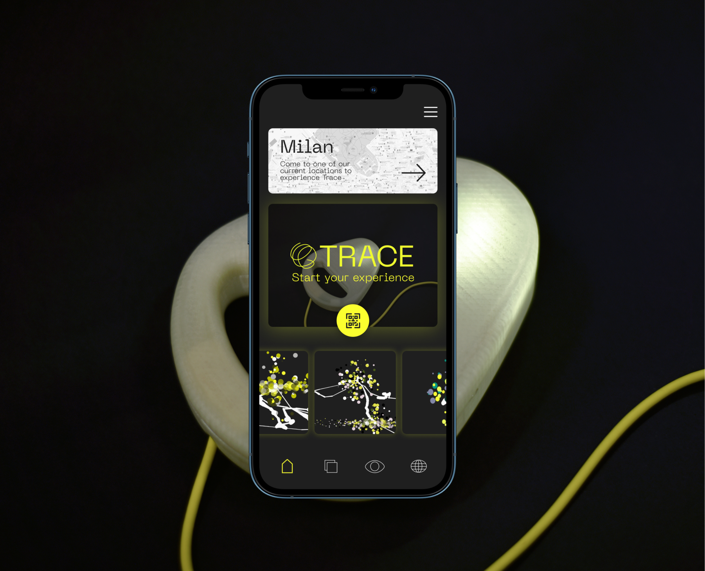
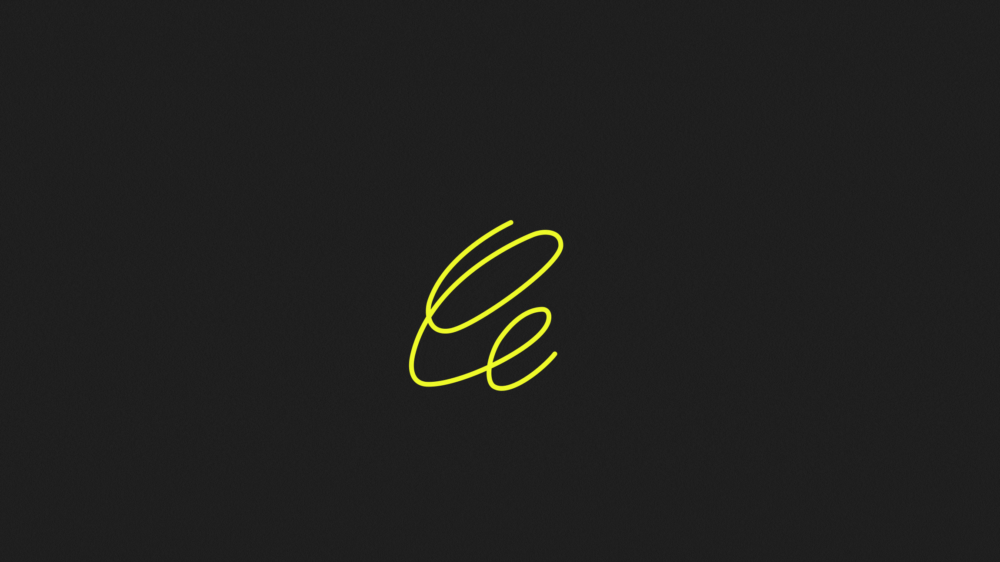
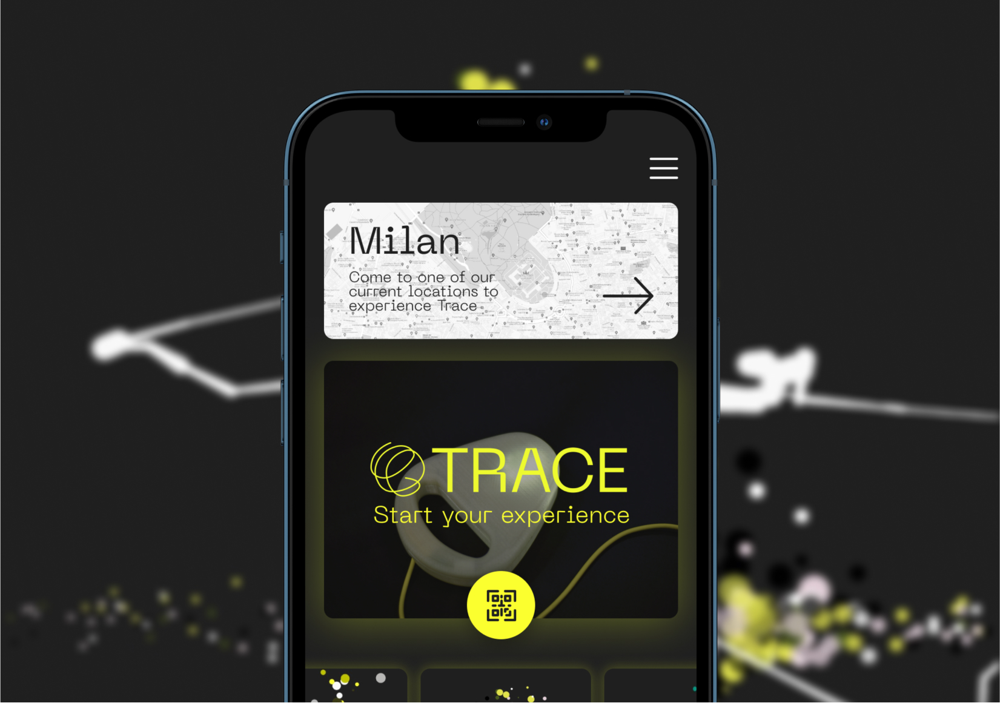
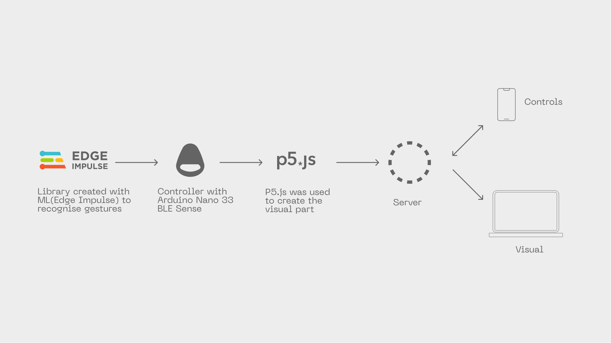
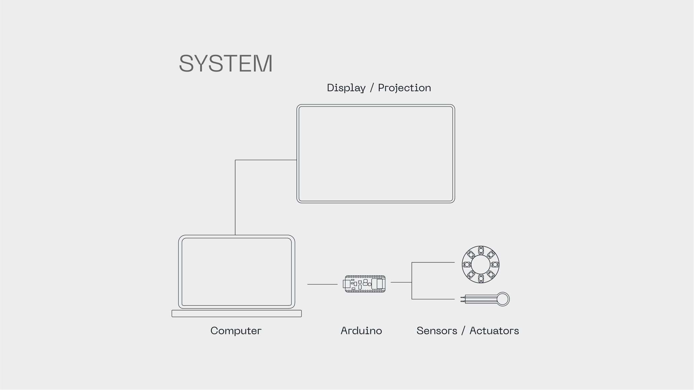
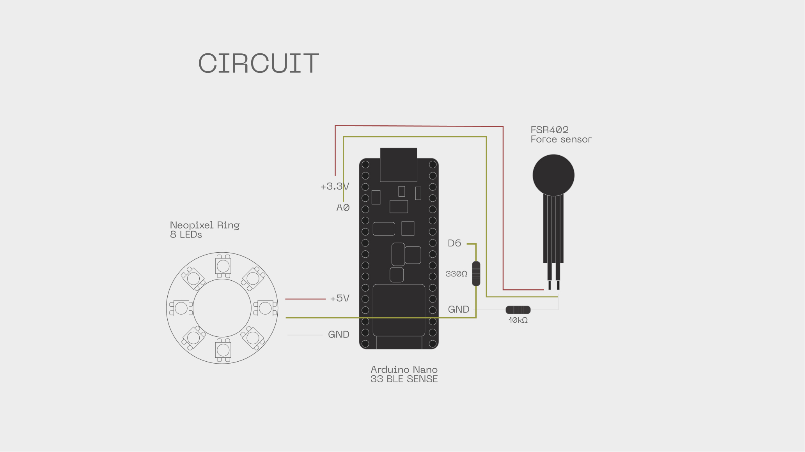

TRACE
06/07
INSTALLATION


LIFE IN PLASTIC
07/07
Trace is an interactive installation that transforms gestures into digital paintings. Using a playful, motion-sensitive device, users can create art through movement. Designed for public spaces, Trace invites passersby to engage in spontaneous digital drawing. A connected web app allows users to modify, publish, and share their creations, fostering a shared artistic experience.
Year
2021
Role
Concept Development
UX Mapping
ML Implementation
Prototype
Tools used
Figma
P5.js
Edge Impulse
Arduino
Rhinoceros & 3D Printing
Context
HW & SW Course
Visual identity & Interactions
Trace’s visual identity blends playfulness with a futuristic edge. The striking contrast between grey and vibrant yellow reflects its innovative character as a new kind of drawing and play device. The animated scribble reinforces Trace’s dynamic spirit, while interactive gestures trigger bursts of colourful dots, creating a lively and engaging experience.




SCHEMATIC OF THE PROJECT
Displays the total number of cyclists in a selected timeframe, supported by a heatmap that highlights areas of higher cycling activity to help managers understand usage levels.

COMPONENTS
Provides guidance on where to place cycling infrastructure based on each borough’s primary cycling purpose, commuting or leisure, and presents key statistical data to inform planning.


Key takeaways


adapting to challenges
Working with different technologies, and the challenges that came with it, meant we had to stay flexible in our design process and adapt, while still staying true to the initial concept and user journey.
machine learning & creative coding
We used Edge Impulse to explore how we could use gesture recognition in order to create new forms of interaction. Also, playing with p5.js was an easy way to familiarise with coding.
form follows code
The combination of the Arduino, the ML and the p5 codes determined the function of the drawing device, while the usability tests helped us to determine the proper affordances of the device.